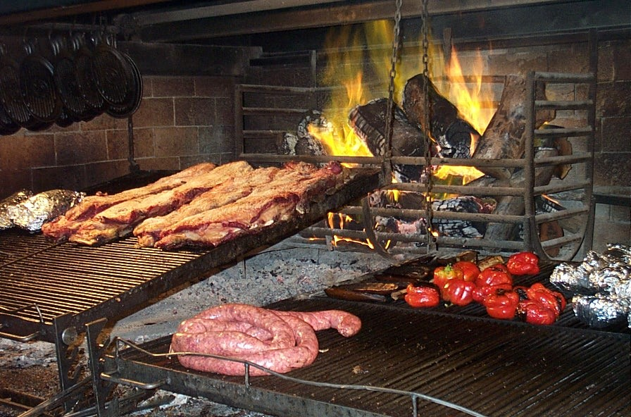

Formas de hacer un asado
Asado rápido a la parilla
Lento a la parrilla
Asado a la Llama
Asado al horno
Asado al rescoldo o sin parrilla
Asado a dos fuegos
Asado a la vara o la estaca
Asado a la plancha